Česky:
|
PiLibSDK
Bare-metal SDK knihovna pro moduly Raspberry Pi
Před-alfa verze 0.43, rozpracováno - ve vývoji
Poslední aktualizace: 25.07.2026
(c) 2026 Miroslav Němeček
https://github.com/Panda381/PiLibSDK
Download knihovny spolu s ukázkovými aplikacemi a všemi podklady (380 MB)

Poznámka: Schémata a plošné spoje jsou ve formátu programu KiCAD verze 9.
PiLibSDK je bare-metal knihovna pro moduly Raspberry Pi. "Bare-metal" znamená, že programy běží na čistém hardware bez operačního systému, nepodléhají operačnímu systému a mají plný přístup k hardware. Moduly Raspberry Pi lze tak používat podobným způsobem, jako mikročipy. Výhodou je i to, že zařízení je plně v provozu do 3 sekund od zapnutí napájení. V současnosti jsou podporovány moduly Raspberry Zero 1, Zero 2 W, Pi 2 a Pi 3. Podpora modulů Pi 4 a Pi 5 je velmi omezená, a pravděpodobně ani v budoucnu nebudou podporovány, protože jejich přínos je pro bare-metal využití malý.
Ukázkové programy jsou připravené pro hardware modulární mikročipové stavebnice BarePi (linky: www, GitHub). Zapojení hardware samozřejmě není nutné dodržet, ale jedná se o nejobvyklejší přiřazení signálů pinům. Hlavním zařízením je herní konzole ZeroTiny, která odpovídá sestavení modulů stavebnice "Zero", "Base" a "KeyPad".
K zařízení je možné připojit i LCD SPI displej 320x240 pixelů, s řadičem ST7789. Zapojení odpovídá modulu "LCD320x240" stavebnice BarePi. Software knihovny je připraven tak, že pokud detekuje připojení modulu LCD320x240, aktivuje SPI výstup na displej a odesílá obraz i na tento LCD displej. Detekce se provádí rezistorem 10K zapojeným mezi piny DC a CS. Chcete-li mít možnost u koncového zařízení výstup na LCD displej vypínat, můžete to provést vypínačem připojujícím tento rezistor 10K. Detekce probíhá při startu aplikace nebo loaderu - po změně přepínače je tedy nutné ukončit nebo spustit program nebo loader. Vypnutí výstupu na LCD displej zajistí rychlejší chod programu, protože odesílání dat na LCD displej program značně zatěžuje.
Přestože má LCD SPI displej rozlišení pouze 320x240 pixelů, je možné používat i programy s rozlišením 640x480 pixelů. Driver automaticky provede zmenšení obrazu na cílový rozměr. Je-li potřeba na LCD displeji zobrazit detaily, které se zmenšením obrazu ztratí, je to možné stiskem kláves Alt+[A] - funkce označená "Insert", zde se používá ve významu "Zoom". Při stisku kláves se na LCD displeji zobrazí postupně jednotlivé 4 kvadranty obrazu v plném rozlišení, pátým stiskem se obnoví zobrazení plného zmenšeného obrazu.
Není-li při použití LCD displeje potřeba výstup na HDMI monitor, kabel monitoru odpojte. To zajistí značný pokles odběru proudu (zhruba ze 400mA na 200mA), což je významné především při provozu konzole z baterie. Detekce připojení HDMI monitoru se provádí při startu programu - po odpojení nebo připojení HDMI monitoru je proto nutné ukončit nebo spustit program nebo loader. U modulu Raspberry Zero 1 může být pro detekci HDMI monitoru nutné odpojit a připojit napájecí napětí.
Připojíte-li k zařízení RTC obvod hodin reálného času DS3231, budou z něj spouštěné aplikace načítat aktuální reálný čas. Pro I2C EEPROM paměti je připravena možnost ukládání konfigurace programů.
Pro zařízení BarePi je k dispozici boot loader, který umožňuje snadné spouštění programů z SD karty. Programy jsou připraveny pro BarePi i ZeroTiny, s moduly Zero 1, Zero 2 32bit nebo Zero 2 64bit. Moduly Zero 1 a Zero 2 se liší především rychlostí - Zero 2 je znatelně rychlejší než Zero 1. Vyšší rychlost je dána nejen vyšší frekvencí procesoru, ale také novější architekturou. Kromě toho modul Zero 2 disponuje 4 jádry, zatímco Zero 1 pouze jedním jádrem. Přednostně se proto doporučuje používat modul Zero 2. Modul Zero 1 použijte pouze v případě, že ho vlastníte a nemáte pro něj lepší využití. Modul Zero 2 lze provozovat v 32bitovém nebo 64bitovém módu. Překlady jsou připraveny pro oba módy. Z uživatelského hlediska není mezi módy znatelný rozdíl. Doporučuje se dávat přednost 64bitovému módu, který může být v některých případech o trochu rychlejší.

Zařízení stavebnice BarePi lze ovládat jednak herní klávesnicí "KeyPad" a jednak alfanumerickou klávesnicí "MiniKey". Klávesy z klávesnice "KeyPad" jsou mapovány současně i na klávesy klávesnice "MiniKey". Pro odlišení značení kláves se akční klávesy z herní klávesnice uvádí v hranatých závorkách, zatímco znakové klávesy se uvádí bez závorek. Např. "[A]" označuje akční tlačítko "A" na herní klávesnici. Význam tlačítek na herní klávesnici a jejich mapování na alfanumerickou klávesnici je následující.
[A] = Space ... Hlavní akční tlačítko
[B] = Enter ... Vedlejší akční tlačítko
[X] = Tab ... Pomocné tlačítko, např. nápověda
[Y] = Esc ... Opuštění menu, ukončení programu
Alt+Vlevo = Home ... Skok na začátek
Alt+Vpravo = End ... Skok na konec
Alt+Nahoru = PgUp ... Stránka nahoru
Alt+Dolů = PgDn ... Stránka dolů
Alt+A = Insert ... Mód vkládání (u LCD displeje pomocná funkce "Zoom")
Alt+B = Edit ... Mód editace
Alt+X = PrtScr ... Screenshot obrazovky do souboru na SD kartu
Alt+Y = Menu ... Vyvolání systémového menu
Poznámka: Ke spouštění programů není boot loader nutný. Programy můžete spouštět i na samotném modulu Zero1/Zero2, bez dalšího hardware a bez boot loaderu. Na SD kartu nakopírujte systémové soubory z Root adresáře z příslušné složky !ZeroTiny*. Jsou zapotřebí soubory "bootcode.bin", "config.txt", "fixup.dat" a "start.elf". Program zkopírujte do Root složky také, a přejmenujte ho na KERNEL.IMG. Po zapnutí napájení se program automaticky spustí.
Všechny mé zdrojové kódy a data jsou zcela volně k použití pro jakékoli účely. Výjimkou jsou některé soubory odvozené ze zdrojů třetích stran – na ty se vztahuje licence původního autora. Patří sem většina fontů, stejně jako části zdrojových souborů převzaté z knihovny Circle a kódu pro Linux – tyto části jsou ve zdrojových souborech označeny.
Většina fontů v této knihovně nejsou mým výtvorem. Byly staženy z internetu z neznámých zdrojů s neznámými licenčními podmínkami použití. Pokud chcete používat pouze striktní licence, nepoužívejte fonty z této knihovny.
Ke kompilaci v 32-bit módu potřebujete AArch32 GCC (jménu toolu "arm-none-eabi"). Instalujte do C:\ARM_GCC32.
Ke kompilaci v 64-bit módu potřebzujete AArch64 GCC (jménu toolu "aarch64-none-elf"). Instalujte do C:\ARM_GCC64.
z https://developer.arm.com/downloads/-/arm-gnu-toolchain-downloads
Pokud použijete jiné cesty, upravte cesty v _c1.bat ("set GCC_PI_PATH").
!BarePi ... obsah SD karty pro stavebnici BarePi a ZeroTiny - společné soubory
!BarePi_1 ... obsah SD karty pro stavebnici BarePi a ZeroTiny - spustitelné pro modul Zero 1
!BarePi_3 ... obsah SD karty pro stavebnici BarePi a ZeroTiny - spustitelné pro modul Zero 2 32-bit
!BarePi_4 ... obsah SD karty pro stavebnici BarePi a ZeroTiny - spustitelné pro modul Zero 2 64-bit
_devices ... zařízení: BarePi = modulární mikročipová stavebnice a zařízení ZeroTiny
_drv ... drivery
_font ... fonty
_lib ... knihovny
_sdk ... SDK (obsluha periferií)
_tools ... kompilační nástroje
Apps ... zdrojové kódy příkladů aplikací
K přípravě SD karty připravte SD kartu ve formátu FAT32, nahrajte na ni obsah složky !BarePi a také jednu ze složek !BarePi_* (podle typu modulu).
Pořadí volání vnořených souborů:
-> project "include.h"
-> root "includes.h" (INCLUDES_H)
-> root "global.h"
-> project "config.h"
-> root "config_def.h" (CONFIG_DEF_H)
-> (voláno ze začátku config_def.h) device "_devices/barepi/_config.h"
-> fonts "_font/_include.h"
-> SDK "_sdk/_include.h"
-> drivers "_drv/_include.h"
-> LIB "_lib/_include.h"
-> device "_devices/barepi/_include.h"
ZeroTiny je nejjednodušší herní konzole s moduly Raspberry Zero 1 nebo Zero 2. Odpovídá sestavení modulů "Zero", "Base" a "KeyPad" ze stavebnice BarePi. Přednostně se doporučuje používat modul Zero 2 v 64bitovém módu. Modul Zero 1 může být v některých aplikacích znatelně pomalejší. ZeroTiny obsahuje 9 tlačítek, stereofonni zvukový PWM výstup a výstup na HDMI displej. K dispozici je boot loader umožňující snadné spouštění programů z SD karty.
Konstrukčně je ZeroTiny řešen sendvičovým stylem. U mého prototypu jsem modul Zero připojil k základní desce přes 8mm dutinkovou lištu - především z důvodu snadné výměny modulu. Přiletujete-li modul Zero k desce pouze přes pinovou lištu, konstrukce bude nižší. Ovšem může být obtížnější opravitelnost, např. výměna tlačítka.
Podrobné podklady k hardware ZeroTiny naleznete ve složce "_devices/BarePi/ZeroTiny".
Zdrojové kódy s ukázkovými programy naleznete ve složce "Apps".
Přeložené ukázkové programy naleznete ve složkách "!BarePi*", podle typu modulu a podle módu procesoru.


Konzole ZeroTiny sestavená z modulů BarePi:

System
 KERNEL - Loader of applications |
 SYSINFO - System information |
Book
 ABC - Fairy Tales from the Alphabet (Czech) |
 GINGER - Gingerbread House (English) |
 GINGERCZ - Gingerbread House (Czech) |
Demo
 BALLOONS - Flying balloons |
 BIGFACT - Factorial of 123456789! |
 DRAW - Drawing graphic elements |
 EARTH - Rotating globe |
 FLAG - Fluttering flag |
 FLAG2 - Fluttering custom flag |
 FOUNTAIN - Draw 3D graph |
 FRUITY - 130 music loops with MP3 compression |
 HELLO - Simplest example |
 HYPNO - hypnotic rotating pattern |
 LEVMETER - simulation of music spectrum indicator |
 LINEART - draw line flower |
 LINES - relaxation line pattern generator |
 MATRIX - matrix code rain |
 OSCIL - simulation of oscilloscope signal |
 PF2027 - Christmas animation |
 PI - calculating number Pi to 4780 digits |
PIXELS - random generation of colored pixels |
 RAYTRACE - 3D pattern generation by ray tracing method |
 SPHERES - random spheres |
 SPOTS - random spots |
 TWISTER - twisting textured block |
 WATER - simulation of rippling water surface |
  ANTS - card game |
  ATOMS - Game of exploding atoms |
  EGGS - Logic game as Reversi |
  FIFTEEN - Logic puzzle game |
  FLAPPY - Logic game from Sharp MZ800 |
  CHESS - Chess game |
  INVADERS - Shooting game Space Invaders |
  LIFE - Cell life simulator |
  MAZE - Find way out of maze |
  PACMAN - Action game Pac-Man |
  PICTOR - Picopad Collector |
  RAPTOR - Shooting game |
| 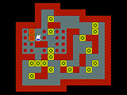 SOKOBAN - Logic game, 3008 levels |
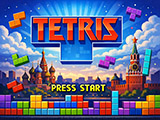 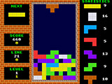 TETRIS - Game stacking blocks |
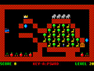 TRAIN - Logic game, 50 levels |
| 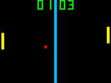 TVTENNIS - Classic TV game |
VEGASLOT - Winning Slot Machine |
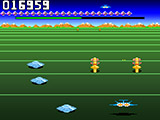 ZOOM - Buck Rogers-Planet of Zoom |
Doporučuji používat MP3 soubory s konstantní bitrate. Některé starší formáty MP3, nebo MP3 s variable bitrate, nemusí umožňovat posouvání ukazatele přehrávání, případně skladba může skončit předčasně před koncem. Přehrávač podporuje pouze krátká jména souborů - tj. jméno MP3 souboru může mít max 8 znaků. Bude-li složka obsahovat i JPG obrázek stejného jména jako MP3, o rozměru 320x240 pixelů, zobrazí se namísto info stránky. Obrázek nebo info lze přepínat klávesou [X]. Klávesa [B] přehraje aktuální adresář od první skladby. Klávesa [A] začne přehrávání od aktuální skladby.
K přehrávači je k dispozici ukázková sada skladeb, ve stylu různých interpretů, vytvořená v nástroji Suno AI. Celkem je to 248 skladeb, obsahujících 13 hodin hudby. Skladby lze stáhnout zde.
Download skladeb část 1 (200 MB): styly ABBA, The Beatles, Breton Celtic, Classical
Download skladeb část 2 (224 MB): styly Computer, Cyberpunk, Enya, Folk
Download skladeb část 3 (213 MB): styly Children, Jean-Michel Jarre, J-pop
Download skladeb část 4 (217 MB): styly Loreena McKennitt, Medieval, Meditation, Metal, Vox Angeli
Download skladeb část 5 (207 MB): styly Mixed, Nightwish s Tarja Turunen, Mike Oldfield
 MP3 - MP3 player |
Test
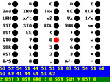 CALCKEY - Test CalcKey keyboard |
 EEPROM - View contents of I2C EEPROMs |
 I2CSCAN - Scan I2C0 and I2C1 bus |
 LCD - Test LCD SPI display |
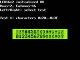 LCD16X2 - Test LCD16x2 text display |
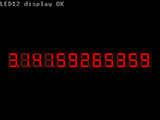 LED12 - Test LED12 display |
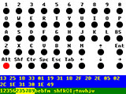 MINIKEY - Test MiniKey keyboard |
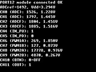 PORT12 - Test PORT12 module |
 RTC - Display and set current time, using RTC module |
 SSD1306 - Test SSD1306 display |
 TESTLED - Test BarePi bus with TESTLED module |
Miroslav Němeček
{kind=link}
{kind=link}
{kind=link}
{kind=link}
{kind=link}
{kind=link}
{kind=link}
{kind=link}
{kind=link}
{kind=link}
{kind=link}
{kind=link}
{kind=link}
{kind=link}
{kind=link}
{kind=link}
{kind=link}